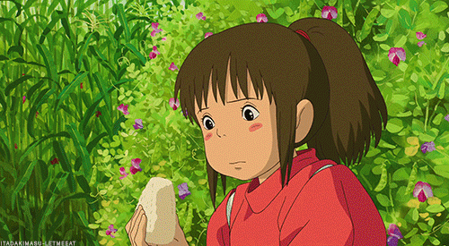

Chihiro's Onigiri

Description
Spirited Away was filled with a variety of ridiculously tantalizing foods, but
we'll start with one of the most simple: onigiri! This comforting dish (and
lovely symbol of friendship in the movie) is a staple snack in Japan that is
pretty easy to recreate at home.
Ingredients
Here's what you'll need:
- 6 mini sheets of roasted seaweed
- 3/4 shredded cooked salmon
- 1 tbsp mayonnaise
- 6 cups cooked sticky rice
Makes 12 onigiri
Instructions
- Start by slicing your nori sheets in half lengthwise.
Mix the mayonnaise into your salmon until well coated.
Set the salmon mix and nori aside.
- Wrap a mound of rice in your hands and add some of salmon
mayo mixture to the center. Cover the mixture with rice and
form the mound into a ball.
- Shape the mound of rice into a triangle using your hands or
a triangle cookie cutter.
- Repeat with the remaining ingredients and let the rice balls
set for 5-10 minutes.
- Once ready to serve, press a nori strip around the bottom of
each onigiri. The rice should be sticky enough that the nori sticks.
- Channel your inner Chihiro and take a big bite of your delicious
creation!